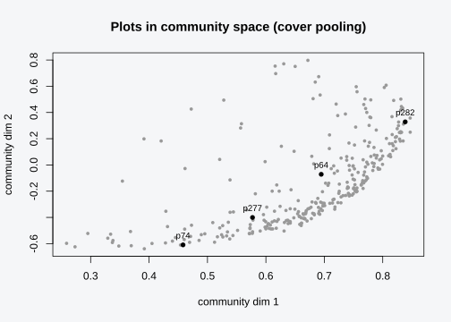
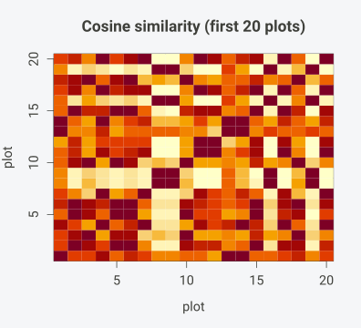
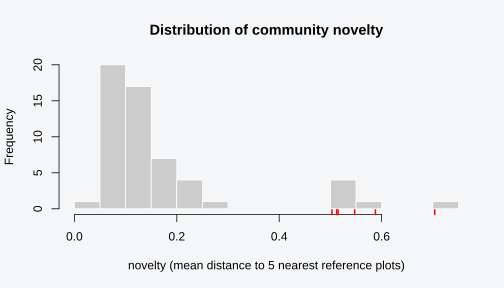

Installation
install.packages("pak")
pak::pak("gcol33/specvec")The core methods need only Matrix and
RSpectra. text2vec is required only for the
glove method, and FNN only to speed up
nearest-neighbour queries.
A species embedding gives every species a vector. This vignette moves up one level: it places each plot in that same space, compares plots to each other and to a reference set, and scores how far a plot sits from familiar ground. The worked examples run on a small simulated dataset where plots draw their species from latent niches, so a plot’s position in the embedding has a meaning we can check against the way it was generated.
Three functions carry the work. community_embedding()
pools species vectors into one vector per plot.
community_similarity() compares those plot vectors,
pairwise within one set or across two sets.
community_novelty() scores each plot by its distance to a
reference body of communities. All three operate on the same plot-by-dim
matrix, so the path runs once from species vectors to plot vectors and
then branches into comparison and novelty without refitting.
The simulation builds M plots over a two-dimensional
environment. Each species has a niche centre, and a plot holds a species
with probability that falls off with the squared distance between the
plot’s environment and the species centre. Cover is the relative niche
match, scaled so the best-matched species in a plot reads 100.
sim_plots <- function(M = 300, S = 40, seed = 1) {
set.seed(seed)
mu <- matrix(rnorm(S * 2), S, 2)
env <- matrix(rnorm(M * 2), M, 2)
rows <- lapply(seq_len(M), function(p) {
d2 <- rowSums((mu - matrix(env[p, ], S, 2, byrow = TRUE))^2)
prob <- exp(-d2 / 2)
present <- which(runif(S) < prob)
if (length(present) < 2) present <- order(prob, decreasing = TRUE)[1:2]
data.frame(plot = paste0("p", p),
species = paste0("sp", present),
cover = round(100 * prob[present] / max(prob[present]), 1))
})
do.call(rbind, rows)
}From species vectors to plot vectors
A species embedding V is a species-by-dim matrix: row
s is the vector for species s. A plot is a set
of species, sometimes with cover. The community embedding turns that set
into a single point by pooling the vectors of the species the plot
contains, weighted by how much of each species is there:
U[p, ] = sum_s w[p, s] * V[s, ] / sum_s w[p, s]The numerator adds up the species vectors, each scaled by its weight
in the plot; the denominator divides by the total weight, so
U[p, ] is a weighted average that lands inside the cloud of
the plot’s species. Two plots that share most of their species, and
weight them similarly, land near each other. A plot made of niche
specialists from one corner of the environment lands in that corner of
the embedding. The readout is the same regardless of which method
produced V, so plot vectors from different fits stay
comparable as long as the underlying species vectors agree.
The weighted average has a useful consequence. A plot vector is never
an arbitrary point; it is a convex combination of its species’ vectors,
so it sits in the hull of the species it contains. A plot with one
species sits on that species’ vector. A plot with many species spread
across the embedding sits near their weighted centroid, which tends
toward the middle of the cloud. The geometry of the species embedding
therefore propagates upward: if two species sit close because they
co-occur, plots built from either of them sit close too. Species that
the embedding never saw, because they fell under
min_occurrence, carry no vector and drop out of the
pooling, so the plot vector is built from the species that survived the
rare-species filter.
The build starts with specvec(), which reads the long
table into presence and cover matrices. A species embedding follows, and
community_embedding() pools it into plot vectors.
df <- sim_plots(M = 300, S = 40, seed = 1)
x <- specvec(df, "plot", "species", abundance = "cover")
emb <- species_embedding(x, method = "abund_pmi", dim = 8, min_occurrence = 3)
comm <- community_embedding(x, embedding = emb)
comm
#> <specvec_community> plots=300 dim=8 pooling=cover
#> from: method=abund_pmi weighting=abundance_pmi factorization=eigenThe print line reports the number of plots, the embedding dimension,
the pooling rule, and the provenance of the species vectors. The plot
matrix U carries one row per plot and one column per
embedding dimension.
With 300 plots and dim = 8, U is 300 by 8.
Each row is a plot’s coordinates in the eight-dimensional species space,
ready for the similarity and novelty tools below.
Cover vs presence pooling
The weight w[p, s] is where cover enters. With
weights = "cover" the weight is the plot’s cover for
species s, so a species covering 80 of a plot pulls the
plot vector four times as hard as one covering 20. With
weights = "presence" every present species carries weight
1, and the plot vector is the plain mean of the vectors of the species
on the list. The two share the same species embedding; they differ only
in how they average it. The same emb flows into both calls
below, so any difference in the resulting plot positions comes from the
weighting rule alone, which makes the comparison a clean A/B test of
cover against presence.
comm_cov <- community_embedding(x, embedding = emb, weights = "cover")
comm_pre <- community_embedding(x, embedding = emb, weights = "presence")
comm_cov$pooling
#> [1] "cover"
comm_pre$pooling
#> [1] "presence"The two plot matrices are built from the same V and the
same species lists, yet they place the plots differently. A quick way to
see this is the per-plot distance between the cover vector and the
presence vector: zero would mean the two agree, and most plots sit well
above zero.
delta <- sqrt(rowSums((comm_cov$U - comm_pre$U)^2))
summary(delta)
#> Min. 1st Qu. Median Mean 3rd Qu. Max.
#> 0.001707 0.089838 0.126863 0.145640 0.182748 0.601871The gap is largest in plots with one dominant species and several trace companions. Cover pooling pulls such a plot toward the dominant’s vector; presence pooling treats the dominant and the traces alike and sits closer to the centroid of the whole species list. In a plot where one species covers 90 and two others cover 5 each, cover pooling weights the dominant eighteen times as heavily as either companion, so the plot vector lands almost on the dominant’s position. Presence pooling weights all three equally and lands a third of the way between them. The two readings of the same plot answer different questions about what the plot is.
The choice follows the question. Cover pooling suits abundance-driven
analyses, where a plot carpeted by one species should read as that
species’ kind of place, and where the cover values come from a
consistent scale. Presence pooling suits species-list work, where the
data are checklists with no reliable abundance, or where every recorded
species should count once regardless of how much of it was there. When
the input has no cover column, community_embedding() falls
back to presence pooling on its own and reports that it did so, so a
presence-only dataset behaves sensibly without any extra argument.
The scatter below shows the plots in the first two community dimensions under cover pooling, with four plots labelled. Position carries the latent niche: plots near each other share their abundant species.
set.seed(2)
lab <- sample(rownames(comm_cov$U), 4)
plot(comm_cov$U[, 1], comm_cov$U[, 2],
pch = 16, col = "grey60", cex = 0.7,
xlab = "community dim 1", ylab = "community dim 2",
main = "Plots in community space (cover pooling)")
points(comm_cov$U[lab, 1], comm_cov$U[lab, 2], pch = 16, col = "black")
text(comm_cov$U[lab, 1], comm_cov$U[lab, 2], labels = lab, pos = 3, cex = 0.8)
Geometry of pooled plot vectors
Pooling is a weighted average of species vectors, and the averaging fixes where a plot can land. A weighted average with non-negative weights is a convex combination, so a plot vector always sits inside the convex hull of the species it contains. The plot cannot land outside the cloud of its own species. A plot built from three species sits somewhere in the triangle their vectors span; add a fourth species and the plot can move into the tetrahedron, never beyond it.
Two limiting cases make the geometry concrete. A plot holding a single species sits on that species’ vector under presence pooling, and a plot holding two species at equal weight sits at their midpoint. We can check both. To keep every embedding species available for the lookup, the demo data carries one extra plot listing all species, then reads the geometry of the two plots of interest.
sp <- emb$species[1:2]
demo <- rbind(
data.frame(plot = "solo", species = sp[1], cover = 50),
data.frame(plot = "pair", species = sp, cover = c(50, 50)),
data.frame(plot = "all", species = emb$species, cover = 50))
xg <- specvec(demo, "plot", "species", abundance = "cover")
cg <- community_embedding(xg, embedding = emb, weights = "presence")
c(solo = max(abs(cg$U["solo", ] - emb$V[sp[1], ])),
pair = max(abs(cg$U["pair", ] - (emb$V[sp[1], ] + emb$V[sp[2], ]) / 2)))
#> solo pair
#> 0 0Both differences are zero: the one-species plot lands on its species’ vector, and the two-species plot lands at the midpoint of the two vectors. The exact landing holds for presence pooling, where the weights are ones and sum to the number of species. Cover pooling keeps the direction but can shorten the vector, because the pooling floors the total weight at one to keep a faint plot from blowing up, so a single-species plot whose total cover weight is below one sits along the species’ vector at reduced length rather than exactly on it.
The hull property guides interpretation. A plot near the centre of the embedding cloud is a generalist mixture, drawing on species from across the space, so its vector averages out toward the middle. A plot near a species corner is dominated by that species and its close neighbours, so its vector sits out at the edge. Two plots near the same corner share that dominant kind of species; two plots near the centre may share nothing specific and still sit close, because both are broad mixtures. The novelty section below uses this directly: a plot that pools to a thinly populated region between corners is one whose species rarely keep company, and that is the geometric signature of an unusual community.
Fitting fresh vs reusing an embedding
community_embedding() can fit a species embedding on the
spot. Passing method, dim, and the
rare-species filters without an embedding argument runs
species_embedding() internally and pools the result.
comm_fresh <- community_embedding(x, method = "abund_pmi", dim = 8,
min_occurrence = 3)
comm_fresh
#> <specvec_community> plots=300 dim=8 pooling=cover
#> from: method=abund_pmi weighting=abundance_pmi factorization=eigenThe alternative is to fit once and pass the fitted object through
embedding =. When the internal fit uses the same method,
dimension, and filters as a pre-fit embedding, the two paths produce the
same species vectors and therefore the same plot matrix
U.
comm_reuse <- community_embedding(x, embedding = emb)
max(abs(comm_fresh$U - comm_reuse$U))
#> [1] 0The maximum element-wise difference is zero to numerical precision: the fresh fit and the reused embedding describe the same plots in the same coordinates. The equality holds because the species embedding is deterministic. SpecVec fixes the sign of every embedding column, so two fits of the same data with the same filters return byte-identical species vectors, and pooling them gives byte -identical plot vectors. Reusing one embedding has a practical payoff. Several community sets pooled from one frame share an axis system, so their plot vectors compare directly and the fit runs once instead of once per set. The reuse path also lets the species embedding come from a larger or more authoritative dataset than the plots being pooled, which is the usual setup when a small survey is placed in the coordinate system of a continental reference.
normalize = TRUE rescales each plot vector to unit
length after pooling, which sends every plot to the surface of a sphere
and makes cosine comparisons depend on direction alone. Leave it off
when distances between plots should reflect both direction and length;
turn it on when only the compositional direction matters.
comm_norm <- community_embedding(x, embedding = emb, normalize = TRUE)
comm_norm$normalized
#> [1] TRUE
range(sqrt(rowSums(comm_norm$U^2)))
#> [1] 1 1Placing new plots in an existing frame
The reuse path supports the workflow that matters most in practice: fit a frame once on a large reference body of plots, then drop a separate, smaller set of plots into that same frame and compare them against the reference. The frame is the species embedding. As long as every new plot is pooled through it, the new plot vectors land in the reference coordinate system and the comparison tools read them on equal terms with the reference plots.
We split the simulated plots into a reference block and a query block, fit the species embedding on the reference alone, and then pool both blocks through that one embedding.
all_plots <- rownames(comm_cov$U)
ref_block <- all_plots[1:240]
qry_block <- all_plots[241:300]
x_ref <- specvec(df[df$plot %in% ref_block, ], "plot", "species", abundance = "cover")
emb_ref <- species_embedding(x_ref, method = "abund_pmi", dim = 8, min_occurrence = 3)
comm_ref <- community_embedding(x_ref, embedding = emb_ref)The query block never entered the fit. Its plots are placed
afterwards by pooling their species through emb_ref, the
embedding learned from the reference. The result is a community object
whose rows are the query plots and whose columns are the reference
frame’s dimensions.
x_qry <- specvec(df[df$plot %in% qry_block, ], "plot", "species", abundance = "cover")
comm_qry <- community_embedding(x_qry, embedding = emb_ref)
dim(comm_ref$U)
#> [1] 240 8
dim(comm_qry$U)
#> [1] 60 8The query matrix has 60 rows and the same 8 columns as the reference,
so the two sit in one space. community_similarity() with
the reference passed through reference = returns a
60-by-240 matrix: each query plot scored against every reference plot.
Reading off the column of the largest entry per row gives each query
plot its closest match in the reference.
S_qr <- community_similarity(comm_qry, reference = comm_ref, metric = "cosine")
dim(S_qr)
#> [1] 60 240
best_match <- apply(S_qr, 1, function(row) colnames(S_qr)[which.max(row)])
head(best_match, 3)
#> p45 p46 p47
#> "p278" "p175" "p268"community_novelty() then scores how far each query plot
sits from the reference body, against the same reference
coordinates.
nov_qry <- community_novelty(comm_qry, comm_ref, k = 5)
round(range(nov_qry), 3)
#> [1] 0.054 0.277This is the realistic version of placing a small survey in a continental frame. The reference embedding stands in for a large, authoritative dataset; the query plots are a fresh survey too small to fit a stable embedding on its own. Pooling the survey through the reference embedding gives every new plot coordinates that mean the same thing as the reference coordinates, so similarity and novelty read correctly without refitting. One condition makes the placement work: every species in the query data must be a species the reference embedding knows. The pooling looks up each embedding species in the query data, so a query species absent from the reference frame has no vector to contribute, and a query frame missing reference species cannot be indexed. In practice a query is harmonised to the reference taxonomy first, and species the reference never saw are dropped from the query before pooling, the same way the rare-species filter drops them at fit time.
Community similarity
community_similarity() compares plot vectors. Called on
one community object it returns the self-similarity matrix: every plot
against every other plot. With metric = "cosine" the
entries are cosine similarities in [-1, 1], where 1 is two
plots pointing the same way in species space and a value near zero is
two plots with little in common.
S <- community_similarity(comm_cov, metric = "cosine")
dim(S)
#> [1] 300 300
round(S[1:4, 1:4], 2)
#> p1 p10 p100 p101
#> p1 1.00 0.69 0.67 0.85
#> p10 0.69 1.00 0.85 0.74
#> p100 0.67 0.85 1.00 0.49
#> p101 0.85 0.74 0.49 1.00The diagonal is 1, each plot is identical to itself. An off-diagonal cell close to 1 marks a pair of plots whose abundant species overlap and point the same direction; a cell near zero or below marks a pair drawing on different niches. In the submatrix above, the larger cells flag plot pairs that share their dominant species. Cosine reads composition through the embedding rather than through raw species overlap, so two plots can score high even with no species in common, as long as their species occupy nearby parts of the embedding. That is the difference from a Jaccard or Bray-Curtis index computed on the species lists: the embedding lets ecologically similar species stand in for each other, while a set-overlap index counts only the species that match by name.
Embedding similarity vs raw set overlap
The claim that the embedding sees structure a set-overlap index
misses is worth testing directly. We can build a Jaccard dissimilarity
from the presence matrix x$P in a few lines, with no extra
package: Jaccard is one minus the size of the shared species set divided
by the size of the combined set. The presence matrix carries plots in
its rows and species in its columns, so a row of x$P
greater than zero is a plot’s species list as a logical vector.
plots_sub <- rownames(comm_cov$U)[1:60]
P_sub <- as.matrix(x$P[plots_sub, , drop = FALSE]) > 0
jaccard <- function(a, b) {
u <- sum(a | b)
if (u == 0) 1 else 1 - sum(a & b) / u
}Filling a 60-by-60 Jaccard matrix is a double loop over the plot pairs. Alongside it we take the cosine similarity from the embedding and turn it into a dissimilarity by subtracting from one, so both matrices read the same direction: small means similar, large means different.
n <- length(plots_sub)
Jac <- matrix(0, n, n, dimnames = list(plots_sub, plots_sub))
for (i in seq_len(n)) for (j in seq_len(n)) Jac[i, j] <- jaccard(P_sub[i, ], P_sub[j, ])
cos_dis <- 1 - community_similarity(comm_cov, metric = "cosine")[plots_sub, plots_sub]
ut <- upper.tri(Jac)
cor(Jac[ut], cos_dis[ut], method = "spearman")
#> [1] 0.8159891The Spearman correlation between the two dissimilarities runs about 0.82 on this set. The embedding and the species lists agree on the broad ordering of plot pairs, which is the reassuring part: plots that share many species mostly do sit close in the embedding. The 0.82 also leaves room for disagreement, and the disagreement is where the embedding earns its place. The clearest case is a pair of plots that share no species at all, which Jaccard scores as maximally dissimilar by construction, yet which the embedding places close together.
zero_overlap <- Jac == 1
diag(zero_overlap) <- FALSE
emb_cos <- community_similarity(comm_cov, metric = "cosine")[plots_sub, plots_sub]
emb_cos[!zero_overlap] <- -Inf
hit <- which(emb_cos == max(emb_cos), arr.ind = TRUE)[1, ]
pa <- plots_sub[hit[1]]; pb <- plots_sub[hit[2]]
c(shared_species = sum(P_sub[hit[1], ] & P_sub[hit[2], ]),
jaccard = Jac[hit[1], hit[2]],
cosine = round(emb_cos[hit[1], hit[2]], 3))
#> shared_species jaccard cosine
#> 0.00 1.00 0.95The two plots p131 and p109 hold no species in common, so their Jaccard dissimilarity is the maximum 1, and a checklist comparison files them as unrelated. Their cosine similarity in the embedding is around 0.95. The species that fill the two plots are different by name but sit in the same region of the embedding, because they co-occur with a common third set of species across the wider dataset, so the pooled plot vectors point almost the same way. A set-overlap index cannot reach this conclusion: it has only the species names and no notion that two unshared species play similar ecological roles. The embedding carries that notion in the geometry, which is the reason to pool through it rather than score the raw lists.
The disagreement runs the other way too. Two plots can share a species or two yet sit apart in the embedding when their other species pull them into different regions. Jaccard counts the shared name while the embedding weighs the whole composition, so the two indices answer different questions. The Jaccard number measures how much the species lists overlap, while the cosine measures how close the communities sit in the learned species space. For ordination, gradient analysis, and novelty scoring, the second question is usually the one of interest, which is why the rest of this vignette works in the embedding.
A reference set goes in through the reference argument.
The result has one row per plot in object and one column
per plot in reference, so it answers “how does each of
these plots compare with each of those”. Splitting the plots into two
halves gives a worked cross-comparison.
plots_all <- rownames(comm_cov$U)
half <- length(plots_all) %/% 2
xa <- specvec(df[df$plot %in% plots_all[1:half], ], "plot", "species",
abundance = "cover")
xb <- specvec(df[df$plot %in% plots_all[(half + 1):length(plots_all)], ],
"plot", "species", abundance = "cover")
ca <- community_embedding(xa, embedding = emb)
cb <- community_embedding(xb, embedding = emb)
Scross <- community_similarity(ca, reference = cb, metric = "cosine")
dim(Scross)
#> [1] 150 150metric = "euclidean" switches the readout to
straight-line distance between plot vectors. Distance grows as plots
diverge, so it reads as a dissimilarity: small values are near
neighbours, large values are far apart. Cosine ignores vector length and
cares about direction; Euclidean distance feels both, and the two rank
plot pairs differently when plots vary in how strongly their species
load on the embedding. A species-poor plot and a species-rich plot built
from the same niche point the same way and score high on cosine, yet sit
a real distance apart in Euclidean terms because their vectors have
different lengths. Pairing metric = "euclidean" with
normalize = TRUE at the pooling step removes the length
difference, so the distance then tracks direction alone and the two
metrics agree on ordering. The Euclidean distance from
community_similarity() is the same distance
community_novelty() averages over its nearest neighbours,
so the two functions read plots through one geometry.
D <- community_similarity(comm_cov, metric = "euclidean")
round(D[1:4, 1:4], 2)
#> p1 p10 p100 p101
#> p1 0.00 0.63 0.68 0.45
#> p10 0.63 0.00 0.46 0.58
#> p100 0.68 0.46 0.00 0.85
#> p101 0.45 0.58 0.85 0.00How far the two metrics agree
We can measure how much the choice of metric changes the ranking of plot pairs. Take the cosine dissimilarity and the Euclidean distance over the whole community set, and correlate them by rank across all plot pairs. A rank correlation of one would mean the two metrics order every pair the same way.
cos_d <- 1 - community_similarity(comm_cov, metric = "cosine")
euc_d <- community_similarity(comm_cov, metric = "euclidean")
ut <- upper.tri(cos_d)
cor(cos_d[ut], euc_d[ut], method = "spearman")
#> [1] 0.9920299The correlation is about 0.99 on this set. The two metrics mostly agree, because the plot vectors here vary only modestly in length: the niche simulation gives every plot a comparable number of species, so the pooled vectors sit at similar distances from the origin. The agreement is not perfect, and the gaps show up in the neighbour rankings of individual plots. We take the plot with the longest vector and list its nearest neighbours under each metric.
len <- sqrt(rowSums(comm_cov$U^2))
foc <- names(which.max(len))
cos_nn <- names(sort(community_similarity(comm_cov)[foc, ], decreasing = TRUE))[2:4]
euc_nn <- names(sort(community_similarity(comm_cov, metric = "euclidean")[foc, ]))[2:4]
rbind(cosine = cos_nn, euclidean = euc_nn)
#> [,1] [,2] [,3]
#> cosine "p235" "p106" "p82"
#> euclidean "p235" "p106" "p105"The two neighbour lists share their first two entries and diverge at
the third. Cosine and Euclidean agree on the very closest plots and
start to disagree further out, where a longer plot vector that points
almost the same way scores high on cosine yet sits a measurable distance
away. Setting normalize = TRUE at the pooling step erases
that length difference, so the Euclidean distance then depends on
direction alone. The two metrics then rank every pair identically.
euc_dn <- community_similarity(comm_norm, metric = "euclidean")
cor(cos_d[ut], euc_dn[ut], method = "spearman")
#> [1] 1The rank correlation between cosine dissimilarity and normalized
Euclidean distance is exactly one. After normalization the Euclidean
distance between two unit vectors is a monotone function of their
cosine, so the two readouts carry the same ordering. The practical rule
that follows: if a downstream method works in Euclidean distance but you
want it to read composition the way cosine does, pool with
normalize = TRUE and the distance will behave like cosine
without any further adjustment.
An image() of a small cosine block shows the structure
at a glance. Brighter cells are more similar plot pairs; the bright
diagonal is each plot against itself.
sub <- S[1:20, 1:20]
image(seq_len(20), seq_len(20), sub,
col = hcl.colors(12, "YlOrRd", rev = TRUE),
xlab = "plot", ylab = "plot",
main = "Cosine similarity (first 20 plots)")
Community novelty
Novelty asks a different question. It measures how far a plot sits
from a body of known communities. community_novelty()
scores each plot in object by its mean Euclidean distance
to the k nearest plots in reference. A plot
whose k nearest reference neighbours are all close scores
low; a plot that sits far from everything in the reference set scores
high. The score is a distance, so it has no upper bound and is read
relative to the spread of the reference.
The mean-of-nearest-neighbours definition matters. A plot’s novelty
is the average distance to its k closest reference plots.
That choice sits between two cruder options: distance to the single
closest reference plot, which reacts to one chance neighbour, and
distance to the reference centroid, which ignores local structure.
Averaging over a handful of neighbours keeps the score steady against a
lone reference plot that happens to sit nearby, so a query plot with one
close neighbour and four distant ones still scores as novel. The score
reads as distance to a local pocket of the reference, which is the
property that lets it separate plots in dense regions from plots in
sparse ones.
The setup splits the plots into a reference set and a query set, both pooled from the same embedding so their coordinates align. The reference is the bulk of the simulated plots; the query mixes ordinary plots with a handful built to land in an unusual part of the species space.
ref_plots <- plots_all[1:250]
qry_plots <- plots_all[251:300]
x_ref <- specvec(df[df$plot %in% ref_plots, ], "plot", "species",
abundance = "cover")
comm_ref <- community_embedding(x_ref, embedding = emb)To force genuine novelty, build a few odd plots that pair the species sitting farthest apart in the embedding. Such species rarely co-occur in the reference, so a plot holding both pools to a point between the reference clusters, in a thinly populated region.
dmat <- as.matrix(dist(emb$V))
ut <- which(upper.tri(dmat), arr.ind = TRUE)
ord <- order(dmat[ut], decreasing = TRUE)
set.seed(7)
odd <- do.call(rbind, lapply(1:6, function(i) {
pr <- ut[ord[i], ]
data.frame(plot = paste0("odd", i), species = emb$species[pr],
cover = round(runif(2, 40, 100), 1))
}))
qry_df <- rbind(df[df$plot %in% qry_plots, ], odd)
x_qry <- specvec(qry_df, "plot", "species", abundance = "cover")
comm_qry <- community_embedding(x_qry, embedding = emb)With reference and query in hand, community_novelty()
returns one score per query plot. k = 5 averages over the
five nearest reference communities, which smooths over a single
unusually close or far neighbour while still tracking the local density
of the reference.
nov <- community_novelty(comm_qry, comm_ref, k = 5)
round(sort(nov, decreasing = TRUE)[1:8], 3)
#> odd2 odd3 odd5 odd1 odd6 odd4 p66 p70
#> 0.704 0.588 0.547 0.515 0.512 0.503 0.277 0.250The six odd plots take the top six places. They pair species the reference rarely holds together, so their plot vectors land in a thinly populated region and their nearest five reference neighbours sit far away, around 0.5 to 0.7 in embedding distance. Ordinary query plots, built the same way as the reference, score below 0.3 because they fall inside the reference cloud where neighbours are close.
is_odd <- grepl("^odd", names(nov))
c(odd = mean(nov[is_odd]), ordinary = mean(nov[!is_odd]))
#> odd ordinary
#> 0.5615432 0.1184275The mean novelty of the deliberately odd plots runs about four to five times the ordinary query plots, which is the behaviour the score is built to give. A histogram shows the bulk of plots at low novelty with a tail of outliers; the odd plots sit in that tail, marked by the red rug.
hist(nov, breaks = 12, col = "grey80", border = "white",
xlab = "novelty (mean distance to 5 nearest reference plots)",
main = "Distribution of community novelty")
rug(nov[is_odd], col = "red", lwd = 2)
Three definitions of distance to a reference
The mean-of-k-nearest score is one of three natural ways to measure how far a plot sits from a reference. We can compute all three for a single odd plot and compare. The distance to the single nearest reference plot reacts to one neighbour; the distance to the reference centroid averages over the whole reference and ignores local structure; the mean of the five nearest sits in between.
R <- comm_ref$U
q <- comm_qry$U[which(is_odd)[1], ]
d_all <- sqrt(rowSums((R - matrix(q, nrow(R), ncol(R), byrow = TRUE))^2))
c(nearest = min(d_all),
mean_k5 = mean(sort(d_all)[1:5]),
centroid = sqrt(sum((q - colMeans(R))^2)))
#> nearest mean_k5 centroid
#> 0.4750535 0.5150102 0.7794510The distance to the single nearest plot is around 0.48, the mean of
the five nearest around 0.52, and the distance to the centroid around
0.78. The centroid distance reads largest because the reference fans out
around its mean, so even a plot inside the cloud sits some way from the
average point. The centroid figure also misses the local picture: it
cannot tell a plot in a dense reference pocket from one in a sparse
pocket the same distance from the mean. The single-nearest figure has
the opposite weakness, swinging on one chance neighbour. The mean of the
five nearest reads the local pocket, which is the property
community_novelty() is built on.
How k moves the scores
The value of k shifts the scores in a predictable way.
We sweep k and record the mean novelty of the odd plots,
the mean for the ordinary query plots, and their ratio.
ks <- c(1, 3, 5, 10, 20)
sweep <- t(sapply(ks, function(k) {
nv <- community_novelty(comm_qry, comm_ref, k = k)
c(k = k, odd = mean(nv[is_odd]), ordinary = mean(nv[!is_odd]),
ratio = mean(nv[is_odd]) / mean(nv[!is_odd]))
}))
round(sweep, 3)
#> k odd ordinary ratio
#> [1,] 1 0.541 0.079 6.884
#> [2,] 3 0.553 0.100 5.506
#> [3,] 5 0.562 0.118 4.742
#> [4,] 10 0.582 0.153 3.810
#> [5,] 20 0.617 0.204 3.018Every score rises with k, because reaching for more
neighbours pulls in plots that sit further away. The ordinary plots
climb faster than the odd ones, so the ratio falls from near 7 at
k = 1 to about 3 at k = 20. The odd plots stay
flagged across the whole range, which is the steadiness the mean buys,
yet a large k blunts the contrast by averaging the
reference’s sparse pockets into its dense ones. A moderate
k keeps the odd plots far above the ordinary ones while
still smoothing single-neighbour noise.
A plain matrix as the reference
community_novelty() reads either a
specvec_community or a plain numeric matrix of community
vectors, so a fixed reference frame can be saved once and reused across
query batches.
R_mat <- comm_ref$U
nov_mat <- community_novelty(comm_qry, R_mat, k = 5)
identical(unname(nov_mat), unname(nov))
#> [1] TRUEThe scores from the matrix reference match the scores from the community object exactly, because the function works on the underlying plot-by-dim matrix either way. In a production setting the reference matrix is computed once on the authoritative dataset and stored, and each incoming batch of plots is scored against the stored matrix without rebuilding a community object, which keeps the reference fixed across every batch.
The choice of k trades sensitivity against stability.
Small k (1 or 2) reacts to the single closest reference
plot and flags anything off the beaten track, at the cost of noise.
Larger k averages over a neighbourhood and reports distance
to a region rather than a point, which is steadier when the reference is
dense. The function caps k at the number of reference
communities, so passing a k larger than the reference
simply uses every reference plot. The reference may be a
specvec_community or a plain numeric matrix of community
vectors, so a fixed set of reference coordinates, saved once, can be
reused across many query batches without rebuilding a community object
each time.
One detail keeps the comparison honest: the query and the reference
must live in the same coordinate system. Pooling both through the same
species embedding emb guarantees that. A novelty score
computed against a reference pooled from a different fit would mix two
axis systems and report distances that mean nothing, which is the same
reason the similarity examples above pooled their two halves from one
shared emb.
Practical guidance
A few rules of thumb cover most uses.
Choose pooling by what the data mean. Use
weights = "cover" when abundance is reliable and a dominant
species should dominate the plot vector, so a stand carpeted by one
species reads as that species’ kind of place. Use
weights = "presence" for checklists, for occurrence-only
surveys, and whenever every recorded species should count once. The
default falls back to presence on its own when the data carry no cover
column.
Normalize when only direction matters. Leaving
normalize = FALSE keeps both the direction and the length
of each plot vector, so a strongly loaded plot reads as more extreme
than a faint one. Set normalize = TRUE when plots should be
compared on composition alone, which is the common choice ahead of
cosine clustering, since every plot then sits on the unit sphere and
length drops out. Pairing normalize = TRUE with
metric = "euclidean" makes the distance match the cosine
ordering, which is the setting to use when a downstream method expects
Euclidean input yet you want it to read composition.
Match the metric to the question. Cosine reads the compositional direction of a plot and ignores how strongly its species load; Euclidean distance feels both direction and length. For comparing what kind of community two plots are, cosine is the usual choice. For novelty, the score is built on Euclidean distance, so plots that load weakly on the embedding read as nearer the origin and can score lower; normalize the pooling first if length should not enter the novelty score.
Place a small survey in a large frame by reusing the embedding. Fit
the species embedding on the large reference dataset, then pool the
small survey through it with embedding =. The survey plots
land in the reference coordinate system and compare directly to the
reference with community_similarity() and
community_novelty(). Harmonise the survey’s species to the
reference taxonomy first, since a survey species the reference never saw
has no vector to contribute and a survey missing reference species
cannot be pooled through the frame.
Pool several community sets from one shared embedding. Fitting the
species embedding once and passing it through embedding =
to each community_embedding() call guarantees the sets
share an axis system. Plot vectors from different sets then compare
directly, and the fit cost is paid once. Refitting per set risks sign or
scaling drift that breaks cross-set comparison.
Scale k to the reference. With a small reference set a
large k averages over a big fraction of all reference plots
and washes out the local structure novelty is meant to read;
community_novelty() already caps k at the
number of reference communities. With a few hundred reference plots,
k of 5 to 10 balances sensitivity against noise. Keep
k well below the reference size so the score still reflects
a local neighbourhood.
Give novelty a meaningful reference. The score is a distance to whatever reference you pass, so a reference that is itself narrow makes ordinary plots look novel, and a reference that already contains the odd communities makes them look ordinary. A reference assembled to represent “what is known” gives a score that reads as “how far from the known”. This is also the limit to keep in mind: novelty is relative to the reference, not an absolute outlier score, so a plot flagged as novel against one reference can be unremarkable against another.